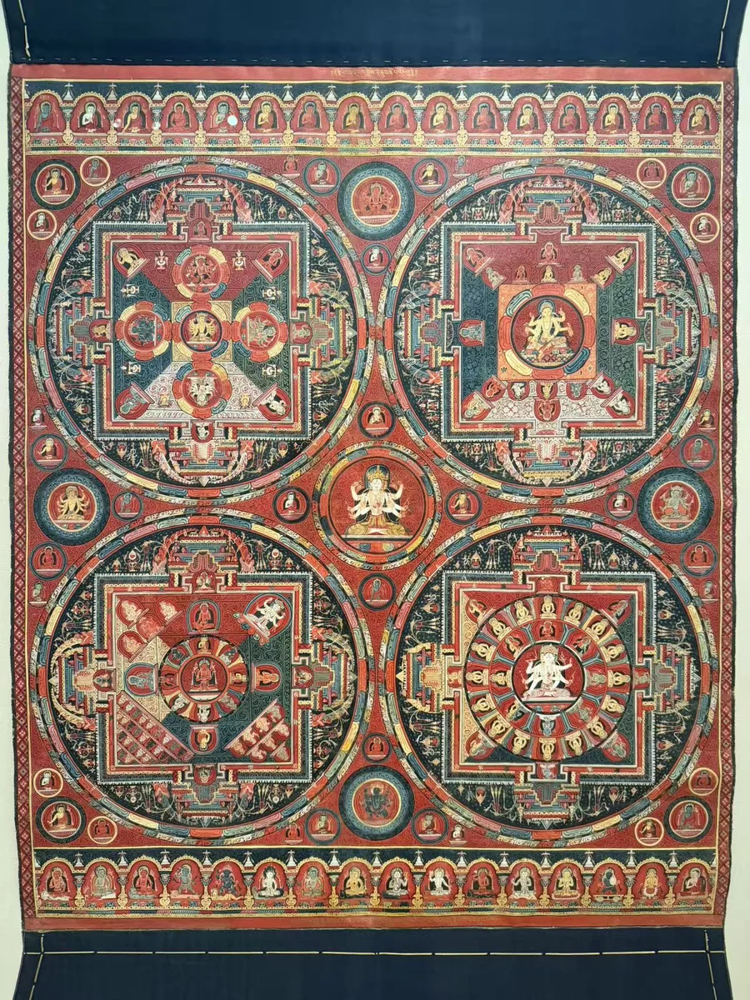
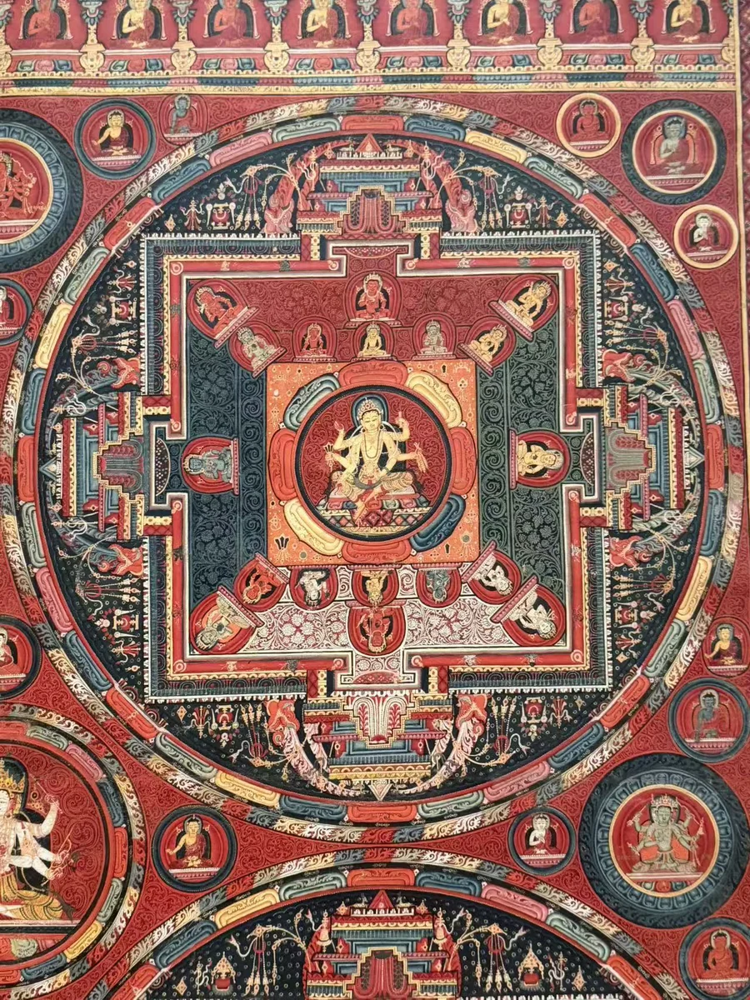
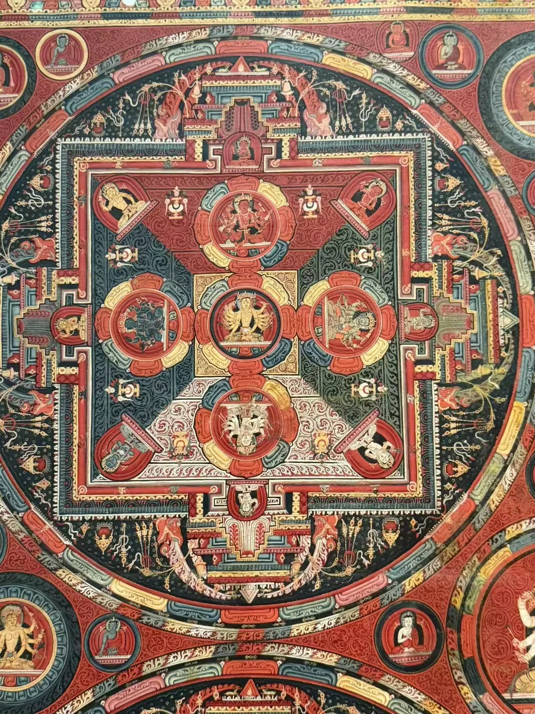
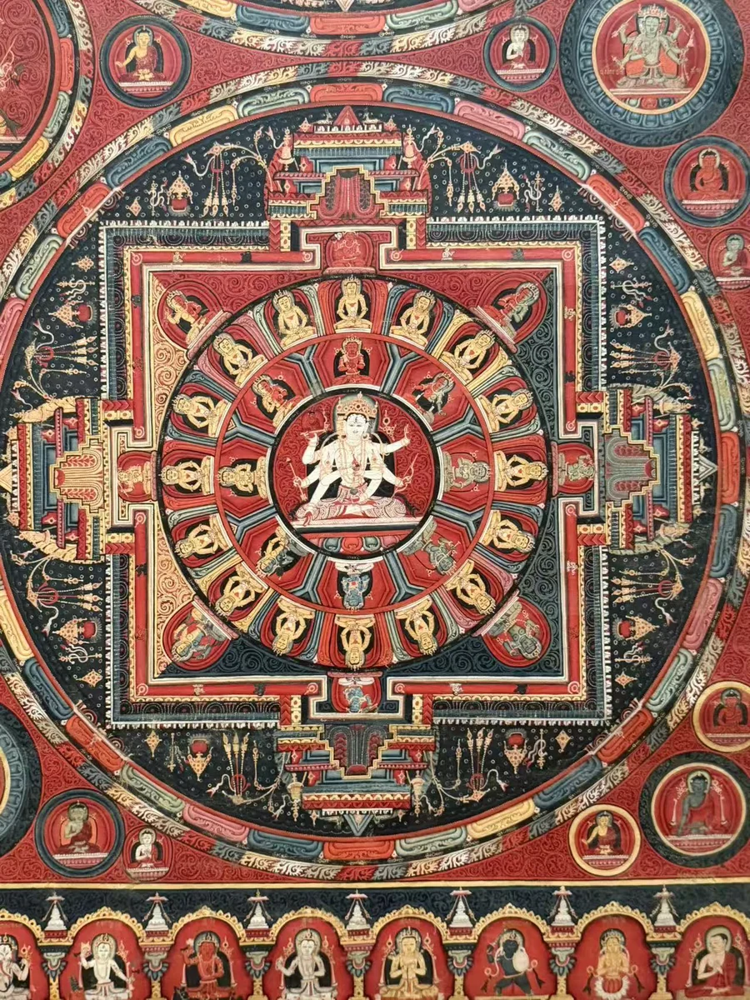
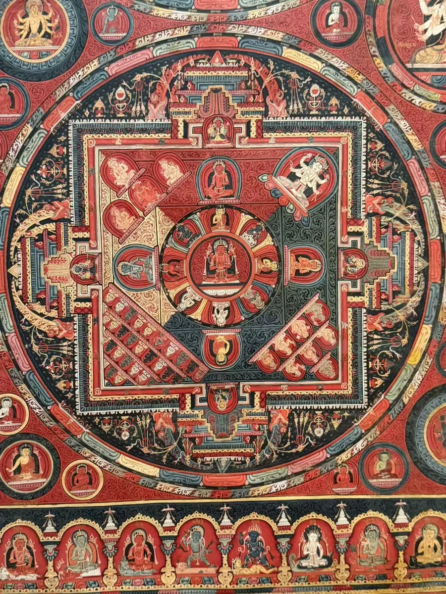
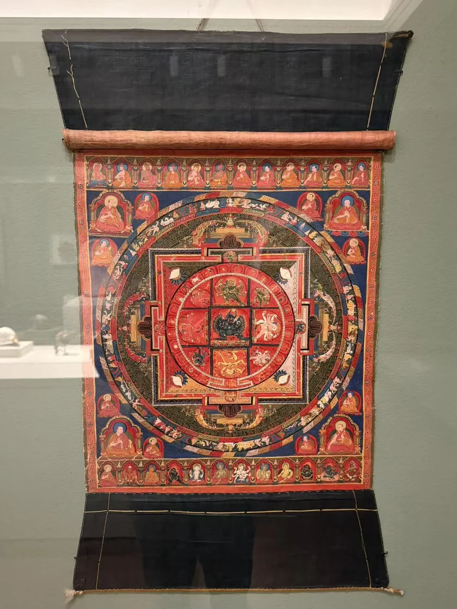

俄尔寺大威德金刚曼荼罗
Rubin Museum of Himalayan Art藏 · 在西雅图亚洲艺术博物馆／SAM展出
15 / CLOSE LOOKING





四个圆形曼荼罗共同占据画面，外圈、宫门与中心将密集的尊像组织起来。全图先交代它们的相互位置，四张局部则让门廊、莲瓣与眷属逐一清晰。画幅最上方还有成列的传承人物。与俄尔寺大威德金刚曼荼罗并看时，可以比较单一中心与多重中心怎样安排观看的次序。 [34] [27]
细看：四区与各自的中心；外圈、宫门与中心；画幅上下的传承及供养人。
Rubin Museum of Himalayan Art藏 · 在西雅图亚洲艺术博物馆／SAM展出
图片按各自比例展示，实物不等大。

布本彩绘
鲁宾收藏，照片摄于西雅图借展现场。
[27] [29]作品基本资料据现场展签及下列馆方记录整理；文字中的观看描述基于这里的现场照片。